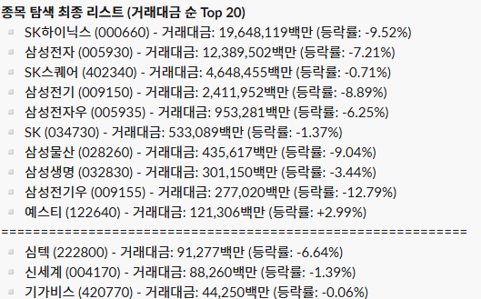
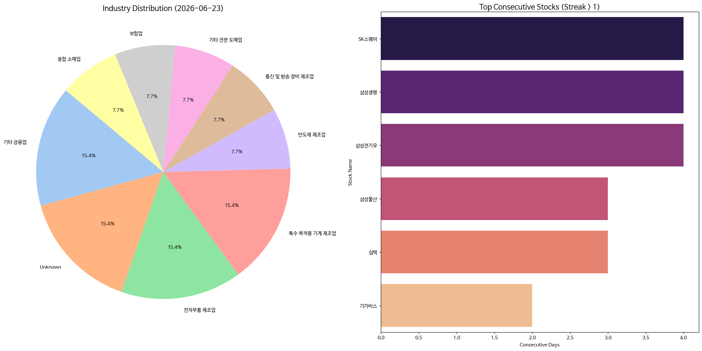
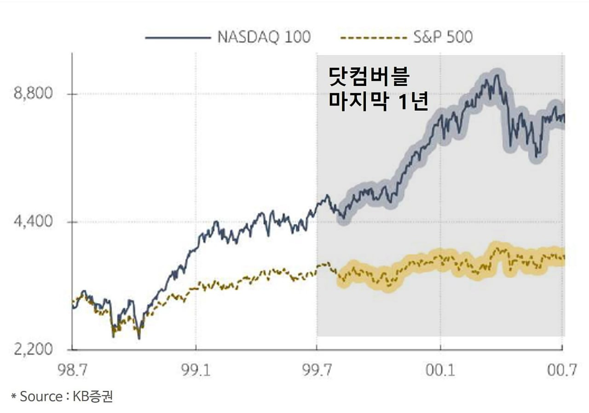

매일의 주도주 정리를 위해 기록합니다.
연속적으로 나온 종목들 또는 상승 후 조정받는 종목 위주로 리서치 해보시면 좋을 것 같습니다.

*오늘의 퀀트픽으로는 '예스티' 입니다.
▶ 열·압력 제어 기술을 기반으로 반도체 및 디스플레이 장비를 제조하며, e-Furnace, Chiller, W가압 등 후공정 반도체 중심의 포트폴리오를 구축
▶ 예스티는 고압 열처리 기술력을 기반으로 HPA(High Pressure Annealing) 시장에 진입하기 시작
▶ HPA는 고농도의 수소·중수소·원자를 침투시킴으로써 계면 결함을 치유하는 장비
▶ 폭발적인 성장 잠재력, HPA 의 DRAM 적용 가시화
#주도섹터
경기방어 및 인프라 섹터
주요 종목: KT(+0.19%), 보해양조(+29.91%), 국순당(+20.85%), 동양고속(+18.52%).
분석: 업종별로는 다각화된통신서비스(+0.17%)와 음료(-0.03%) 업종이 상위에 위치했습니다. 테마별로는 주류(+1.22%) 및 서울고속버스터미널(+3.22%) 테마가 상승하여, 매크로 변동성 심화에 따른 자금의 전형적인 방어 자산 대피 현상이 관측되었습니다.
#조정섹터
반도체 최상위 대형주 및 지수 연동 가치주
주요 종목: SK하이닉스(-9.52%), 삼성전자(-7.21%), 삼성전기(-8.89%), 삼성물산(-9.04%), 삼성전기우(-12.79%).
분석: 거래대금 순 리스트 기준 SK하이닉스에 19조 6,481억 원, 삼성전자에 12조 3,895억 원의 거래대금이 집중되며 낙폭이 확대되었습니다. SK하이닉스는 2,555,000원, 삼성전자는 310,000원으로 마감하며 대형주 전반의 리밸런싱 매물이 출회되었습니다.

코스피 지수는 -9.99% 하락한 8,203로 마감하며 8,200선까지 후퇴했습니다. 코스닥 지수 역시 -7.94% 하락한 891.52를 기록하며 900선을 하회했습니다. 대형주 중심의 코스피 200 지수는 -10.53%의 낙폭을 기록했습니다.
유가증권시장에서 외국인은 4조 1,017억 원, 기관은 4조 5,120억 원을 각각 순매도하며 지수 하락을 주도했습니다. 해당 매물은 개인 투자자가 8조 5,223억 원의 순매수를 기록하며 전량 흡수했습니다.
연속 종목으로 SK스퀘어(4회), 삼성생명(4회), 삼성전기우(4회) 출현했습니다.
증시하락 배경과 대응전략
1. 국내 증시 내부 요인
밸류에이션 부담 및 외국인 매도 수급: 단기간 사상 최고치를 경신해 온 국내 반도체 대형주들에 대한 가격 부담이 가중된 상태에서 외국인 투자자 중심의 차익 실현 매도세가 급격하게 유입되었습니다.
시가총액 1위 역전: 보통주 기준 코스피 시가총액 1위가 26년 만에 변동(SK하이닉스의 삼성전자 역전)되는 역사적 사건이 발생했습니다. 동일 업종 내 순위 변동이므로 반도체 리더십 자체의 훼손은 아니나, 기존 선두 기업보다 이익 규모가 작은 기업이 1위에 올라서며 과열 우려를 자극했습니다.
2. 대외 매크로 및 글로벌 IT 요인
미국 빅테크 약세 및 AI 수익성 경계: 간밤 나스닥 지수가 빅테크 기업들의 AI 인프라 투자 부담 및 수익성 우려로 1.33% 하락하며 글로벌 자산 시장 하락 압력을 높였습니다.
연준 추가 긴축 우려 및 PCE 대기: 6월 FOMC 이후 연준의 매파적 행보가 지속되는 가운데, BOA가 올해 3차례(9월, 10월, 12월) 추가 금리 인상 가능성을 제기하는 등 글로벌 투자은행들의 긴축 장기화 전망이 유입되었습니다. 이에 따라 목요일(현지시간) 발표 예정인 5월 PCE 물가 지표에 대한 경계감이 선반영 중입니다.
3. 향후 방향성 분수령
마이크론 실적 발표 경계감: 현지시간 24일 예정된 마이크론 실적 발표를 앞두고 시간 외 거래에서 마이크론이 4% 이상 하락했으며, 나스닥 선물 지수도 약 1% 가까이 추가 하락세를 기록했습니다.
위스퍼 넘버 격차: 시장의 공식 EPS 전망치는 19.5~19.9달러 선이나, 트레이더들의 실질 기대치인 위스퍼 넘버는 22달러 선으로 높게 형성되어 있습니다. 실적이 시장의 높은 눈눈높이를 유의미하게 상회하지 못할 경우 차익 실현 매물이 추가 유출될 수 있어, 당분간 장중 변동성 국면이 지속될 가능성이 높습니다.
사실 하락한 이유보다 현재 시장의 국면은 어디인가와 앞으로 어떤 시나리오를 그리느냐가 중요하다고 생각합니다.
KOSPI 8200기준 12개월 예상 p/e 7.9배
메모리 3사 12MF P/E 업데이트(06/23 기준)
삼성전자 5.6X, SK하이닉스 6.6X 수준입니다.
아직 저렴합니다.
AI 성장세와 반도체 이익 모멘텀이 유지되고 있는 만큼 이번 조정을 추세 훼손으로 해석하기는 어려워 보입니다.

2000년 닷컴버블이 터지기 전 1년 동안 버블을 야기한 주도주(IT섹터)는 더 강하게 상승했으며, 해당 주도주만 시장대비 Outperform하고 나머지는 전부 시장대비 Underperform하는 양극화가 무척 심했습니다.
현재는 닷컴 버블이 터지기 전 1년전과 유사하다고 생각합니다. 그렇기에 앞으로 6~12개월동안 반도체의 주도는 지속되리라 생각합니다
이번 조정을 주도주(대형 반도체 및 소부장) 비중 확대 기회로 활용하는 것이 유효하다고 생각합니다.
지금까지의 하락 패턴을 봤을 때 조정은 일주일이내로 마감할 가능성이 높다고 봅니다.
오늘 하락장에 마음고생 하셨을텐데, 힘내시길 바랍니다.